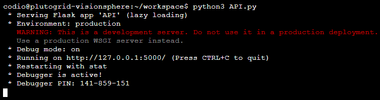
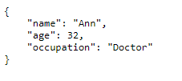
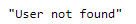
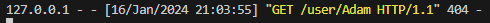

E-Portfolio | Elliot Bedworth
Developing an API for a Distributed Environment
In Unit 9, we were asked to run some existing code for creating an API. We were asked to to answer some questions on the functionality of the API and then to create an API based around our assessed work which will be submitted in Unit 11.
Original API Code
We were initially provided with some code to create an API running on the Flask framework for Python web applications. The code we were provided actually was quite challenging to run successfully with the instructions provided, something which I have addressed in the answers to my questions below.
from flask import Flask
from flask_restful import Api, Resource, reqparse
app = Flask(__name__)
api = Api(app)
users = [
{
"name": "James",
"age": 30,
"occupation": "Network Engineer"
},
{
"name": "Ann",
"age": 32,
"occupation": "Doctor"
},
{
"name": "Jason",
"age": 22,
"occupation": "Web Developer"
}
]
class User(Resource):
def get(self, name):
for user in users:
if(name == user["name"]):
return user, 200
return "User not found", 404
def post(self, name):
parser = reqparse.RequestParser()
parser.add_argument("age")
parser.add_argument("occupation")
args = parser.parse_args()
for user in users:
if(name == user["name"]):
return "User with name {} already exists".format(name), 400
user = {
"name": name,
"age": args["age"],
"occupation": args["occupation"]
}
users.append(user)
return user, 201
def put(self, name):
parser = reqparse.RequestParser()
parser.add_argument("age")
parser.add_argument("occupation")
args = parser.parse_args()
for user in users:
if(name == user["name"]):
user["age"] = args["age"]
user["occupation"] = args["occupation"]
return user, 200
user = {
"name": name,
"age": args["age"],
"occupation": args["occupation"]
}
users.append(user)
return user, 201
def delete(self, name):
global users
users = [user for user in users if user["name"] != name]
return "{} is deleted.".format(name), 200
api.add_resource(User, "/user/")
app.run(debug=True)
Exercise Questions
Run the api.py code. Take a screenshot of the terminal output. What command did you use to compile and run the code?
The first command I had to use was ‘pip install –user flask’. This was required because flask does not come installed by default with Jupyter Notebook, so it must be installed as the code uses the flask module. --user was necessary as we do not have the necessary permissions to install flask, so --user allows us to make the installation just within our user space. I had to follow the same procedure to install flask_restful.
After these had been installed, I ran ‘python3 API.py’ to run the code.

Run the following command at the terminal prompt: w3m http://127.0.0.1:5000/user/Ann. What happens when this command is run and why?
This part of the exercise is where I began encountering issues when following the instructions. The command above does nothing when entered in the terminal prompt which is being used to run flask. It seemed as though this particular exercise was missing some fundamental information, as we were instructed to run these commands in our Codio Jupyter Workbook workspace, but the exercise does not work correctly by doing so. The source article for the code is also behind a paywall (on Medium), so it was not possible to check what information was missing.
To get some sensible results, I created a virtual environment in Python from my terminal in VSCode. I used the command ‘python -m venv .venv’. This created a Python virtual environment (or venv) called .venv in my root directory. I activated the virtual environment by running the command ‘.venv\Scripts\activate’. Activating the virtual environment allowed me to install Python packages (such as Flask) without being concerned about installing many different packages alongside my base Python installation. From here, I used pip to install flask and flask_restful in my virtual environment.
I then ran the API.py code from within my virtual environment. The w3m command which we were asked to run returned an error as not recognised. After some research, it seems w3m is a text-based browser which requires a further installation, although perhaps is included by default on Linux systems. Either way, I entered the URL pointing at localhost directly into Google Chrome. The result was the following in Chrome:

And in my terminal (still running the flask application), the following was shown:

What is happening here is that in Chrome, I am requesting access to the user object with the name Ann. Chrome has returned this to me by using the Get method of the User class in the flask application running on localhost. In the Get method, the user “Ann” is found in the loop, so the corresponding data is returned.
Run the following command at the terminal prompt: w3m http://127.0.0.1:5000/user/Adam. What happens when this command is run and why?
When this command is run, Chrome returns the following:

And the following is shown in the terminal:

As before, Chrome uses the Get method of User to request the data for the user “Adam”. However, as this user does not exist, the loop completes without returning, and the Get method instead returns the failed case of “User not found” along with a 404 code.
What capability is achieved by the flask library?
The flask library enables creation of web applications using the Python language. This allows common web functions such as Get and Post to be configured. In this example, we are creating a local web application running only on our machine.